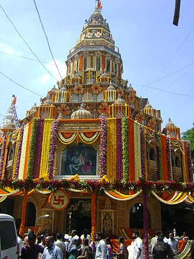

The Shaniwar Wada was normally the seven-story capital building of the Peshwas of
the Maratha Empire. It was
supposed to be made entirely of stone. However, after the completion of the base floor or the first story,
the
people of Satara (the national capital) complained to
the Chhatrapati Shahu I (Emperor) saying that a stone
monument can be sanctioned and built
only by the emperor himself and not the Peshwas. Following this, an
official letter was written to the Peshwas stating that the remaining building had to be made of brick and
not
stone
Gates in Shaniwar_wada
1.Delhi Darwaza
The Delhi Darwaza is the main gate of the complex, and faces north towards Delhi. In fact, Shaniwar Wada is
the
only fort structure in India to have its main gate facing Delhi, the medieval imperial capital of Mughal
Empire.
Even Chhatrapati Shahu is said to have considered the north-facing fort an indication of Baji Rao's
ambitions
against the Mughal Empire, and suggested that the main gate should be made of chhaatiiche, maatiche naahi!
(Marathi for "of the chests of brave soldiers, not made of mud").
The strongly built Delhi Darwaza gatehouse has massive doors, large enough to admit elephants outfitted with
howdahs (seating canopies). To discourage elephants charging the gates, each pane of the gate has
seventy-two
sharp twelve-inch steel spikes arranged in a nine by eight grid, at approximately the height of the forehead
of
a battle-elephant. Each pane was also fortified with steel cross members, and borders were bolted with steel
bolts having sharpened cone heads. The bastions flanking the gatehouse has arrow-loops and machicolation
chutes
through which boiling oil could be poured onto offending raiders. The right pane has a small man-sized door
for
usual entries and exits, too small to allow an army to enter rapidly. Shaniwar Wada was built by a
contractor
from Rajasthan known as 'Kumawat' of the Vadar Sub-caste, after completing construction they were given the
name
'Naik' by the Peshwa.[citation needed]
Even if the main gates were to be forced open, a charging army would need to turn sharply right, then
sharply
left, to pass through the gateway and into the central complex. This would provide a defending army with
another
chance to attack the incoming army, and to launch a counterattack to recapture the gateway.
As the ceremonial gate of the fort, military campaigns would set out from and be received back here, with
appropriate religious
Location
आगाखान पॅलेस/Agakhan palace
Location: Pune, Maharashtra, India Coordinates:18.5523°N 73.9015°E Area: 7.7 hectares (19 acres) Built: 1892; 132 years ago Governing body: Gandhi National Memorial Society
History
Historically, the palace holds great significance. Mahatma Gandhi, his wife Kasturba Gandhi and his
secretary
Mahadev Desai were interned in the palace from 9 August 1942 to 6 May 1944, following the launch of Quit
India
Movement. Kasturba Gandhi and Mahadev Desai died during their captivity period in the palace and have
their
Samadhis located over there. Mahatma Gandhi and Kasturba Gandhi have their memorials located in the same
complex, near Mula river.[5] Legend goes that the Sultan built the palace to provide employment to the
famine
struck villagers of the surrounding region; so he employed 1000 people, and the palace was constructed in
five
years. It was built in Rs 12 lakhs. The total area is 7.7 hectares (19 acres) and built up palace covers
2.8
hectares (6.9 acres), and the rest is a well maintained garden.[citation needed]
Location
सारसबाग/Sarasbaug
,
History
Saras Baug was built in the 20th century around the temple which was built in the mid-18th century in the
middle
of a lake that once existed in Pune. The idea of building a Ganesh Temple near the Parvati Temple was
conceptualised by Nanasaheb Peshwe. The construction began in 1750 and was completed 34 years later, in
1784.
Between the 18th and the 19th century, the temple was used by the Marathas as a meeting point to carry
out
military strategy discussions. They made tactical plans against the British and the Nizams. It is said that
the
Marathas would sail in boats to the Ganesh Temple in the middle of the lake and, for complete privacy, the
boats
were steered by Native Africans because they would not understand a word of Marathi.
The temple and Saras Baug has undergone renovations several times in these years. One of these renovations
was
done around 1842, assisted by the East India Company. There was another major revamp in 1969 which was
supervised by Anand Rao Mane and Mahadev Kumthekar. The Peshwe Park Zoo was also relocated in 1999. It
took
about 6 years to do so and, in 2005, all the animals were transferred to the Rajiv Gandhi Zoological Park.
Also,
in 1995, a museum dedicated to Lord Ganesha was built inside the premises.
Location
दगडूशेठ गणपती/dagdusheth ganpati Trusts

History
The Dagadusheth Halwai Ganapati temple is a Hindu Temple located in Pune and is dedicated to the Hindu
god
Ganesh. The temple is visited by over one hundred thousand pilgrims every year.[1][2] Devotees of the
temple
include celebrities and chief ministers of Maharashtra who visit during the annual ten-day Ganeshotsav
festival.[3] The main Ganesh idol is insured for sum of ₹10 million (US$120,000).[4] It celebrated 132
years
of its Ganapati festival in 2024.[5]
Location
सिंहगड/Sinhagad Fort
History
Sinhagad fort, whose earlier name was Kondana or Kondhana, stands 20kms, south-west of Pune. Perched on
an
isolated cliff of the Bhuleswar range of the Sahyadri Mountains, its height above sea-level is 1380
metres.
Given natural protection by its very steep slopes, the walls and bastions were constructed at only key
places;
it has two gates – the Kalyan Darwaza in the south-east and the Pun Darwaza in the north-east
Sinhagad fort has a long history. It was captured from theKoli tribal chieftain, Nag Naik, by Muhammad
bin
Tughlaq in 1328 AD. Three centuries later, Shivaji wrested it away by bribing the commander, by the Treaty
of
Purandar (1665 AD) had to cede the fort to the Mughals. Sinhagad fort was the scene of one of the most
daring
exploits in Maratha history when, in 1670 AD, it was recaptured by Shivjaji’s forces under Tanaji Malusare,
who
laid down his life in the battle. On his death, a saddened Shivaji said, “The fort is won, but the lion
is
gone!” Whereupon the fort got is new name: Sinha (lion) gadha (fort). Finally the British seized the fort
from
the Peshwas in 1818 AD, destroying its almost all ancient monuments. Only the traditional gates and broken
walls
remain now.
The upper surface of the fort is undulating and retains few buildings, Ruins of temples, tombs and towers
are
scattered about. Near the gorge is a monument (Samadhi) commemorating the bravery of Tanaji. There is also
a
tiny tomb of Rajaram, Shivaji’s son, who die
Location
इस्कॉन/Iskon Temple
History
ISKCON was founded by Abhaya Caranaravinda Bhaktivedanta Swami (born Abhay Charan De) in New York City, USA,
in
the year 1966. He is considered the spiritual guru of the organization. ISKCON was founded to encourage
the
practice of Bhakti Yoga or Krishna Consciousness.3 Nov 2023


 ,
,